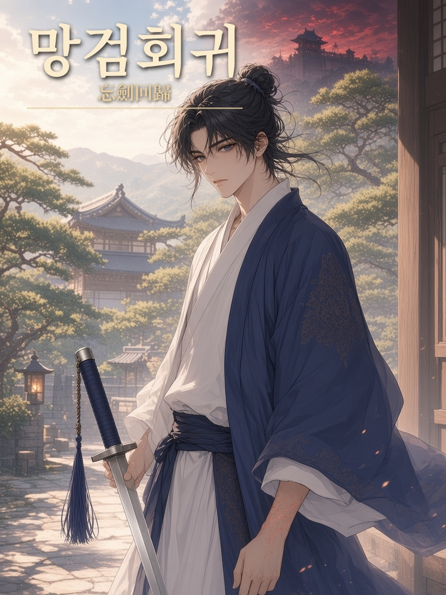
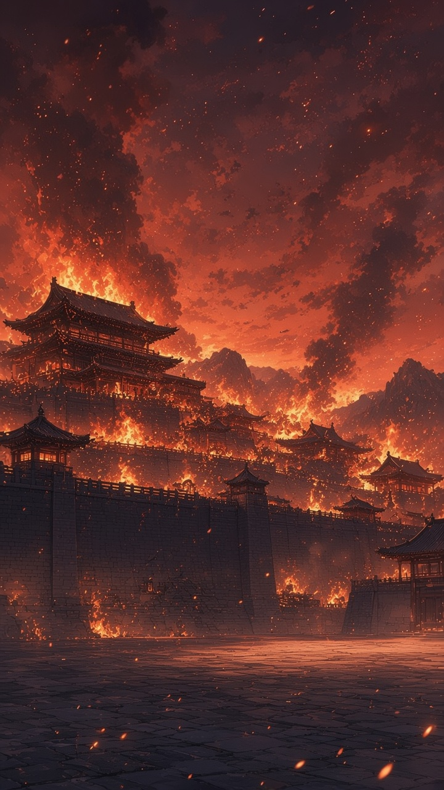
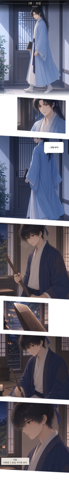

전체 회차 02
첫 이야기부터 차례로

EPISODE 01
1화 · 검이 꺾인 밤
불타는 무림맹에서 쓰러진 검객 진무현이 15세의 몸으로 눈을 뜬다. 살아 있는 사형을 마주한 그는, 사흘 뒤 올 첫 자객을 기다리며 검을 쥔다.

EPISODE 02최신
2화 · 30일
회귀 사흘 뒤, 진무현은 어린 몸으로 청운검문의 담을 넘는 첫 자객을 막는다. 쓰러진 자의 패에는 철혈상단의 문양이 남아 있고, 멸문까지 남은 스물이레의 날이 시작된다.